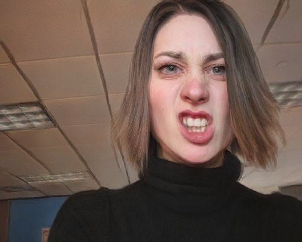
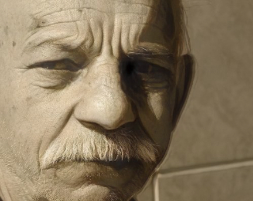
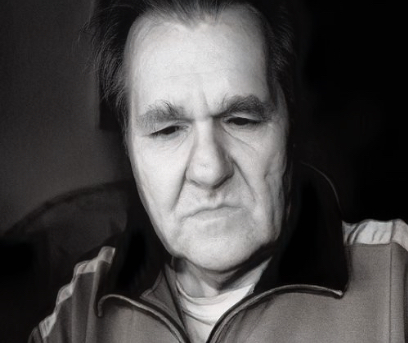

<!DOCTYPE html>
  <html>
    <head>
      <title>Human Face Stimulus Valence</title>
      <!-- Here, we're loading in jsPsych as well as the plugins that will be 
      used throughout this web experiment's code. Some of the jsPsych plugins 
      that this experiment will use include: the preload plugin, the html-button-response 
      plugin, the survey-multi-choice plugin, the survey-likert plugin, and the 
      html-keyboard-response plugin --->
    <script src="jspsych/jspsych.js"></script>
    <script src="jspsych/plugin-preload.js"></script>
    <script src="jspsych/plugin-html-button-response.js"></script>
    <script src="jspsych/plugin-survey-multi-choice.js"></script>
    <script src="jspsych/plugin-survey-likert.js"></script>
    <script src="jspsych/plugin-html-keyboard-response.js"></script>
    <link href="jspsych/jspsych.css" rel="stylesheet" type="text/css" />
  </head>
  <body></body>
  <script>

/* Initialze jsPsych and create timeline (for pushing the trials). 
The on_finish data will be used for debugging the experiment during 
development. */

  var timeline = [];

  const jsPsych = initJsPsych({
    on_finish: function() {
      jsPsych.data.get().localSave('csv', 'caricature_valence_data.csv');
    }
  });
  
/* Preloading all of the image stimuli (from their respective image pathways). This will 
prevent delays in displaying the images during the experiment. */

  var preload = {
    type: jsPsychPreload,
    images: ['stimuli/oasisStimuli/oasisControl/Angry face 2.jpg', 
    'stimuli/oasisStimuli/oasisControl/Angry face 4.jpg', 
    'stimuli/oasisStimuli/oasisControl/Depressed face 2.jpg', 
    'stimuli/oasisStimuli/oasisControl/Sad face 4.jpg',
    'stimuli/oasisStimuli/oasisControl/Scared face 2.jpg',
    'stimuli/cartoonStimuli/cartoonControl/angryFace2C.jpg',
    'stimuli/cartoonStimuli/cartoonControl/angryFace4C.jpg',
    'stimuli/cartoonStimuli/cartoonControl/depressedFace2C.jpg',
    'stimuli/cartoonStimuli/cartoonControl/sadFace4C.jpg',
    'stimuli/cartoonStimuli/cartoonControl/scaredFace2C.jpg']
  };
  
  timeline.push(preload);

/* Creating a welcome screen trial. This will include a simple message welcoming the participant to the study, and prompt them to continue to the next page (button response). */

  var welcome = {
    type: jsPsychHtmlButtonResponse,
    stimulus: `<h2>Welcome!</h2>
    <p>Please press the 'Continue' button to read the instructions for this study.</p>`,
    choices: [`<h2>Continue</h2>`]
  };

  timeline.push(welcome);
  
/* Creating an overview and consent page trial. This trial will contain a broad 
overview of the study, and ask whether the participant consents to participating. 
(Note: if the participant indicates 'I Do Not Consent,' then the experiment will be 
terminated, and the participant will be brought to a screen thanking them for their interest in the study). */

  var overview_and_mandatoryConsent = {
    type: jsPsychHtmlButtonResponse,
    stimulus: `<h2>Study Overview and Consent Form</h2>
    <div style='width: 1000px;'><p><strong>Overview:</strong> This web-based study will ask you to rate various images of human faces on how emotionally negative or positive they are, on a scale of 1–7. Here, ratings of 1 will indicate that you perceive the human face as extremely emotionally negative, while ratings of 7 will indicate that you perceive the human face as extremely emotionally positive. This study is expected to take about 10–15 minutes to complete, including a 2-minute break that will occur after participants complete half of the trials. You will be asked to rate a total of 40 images during the actual experiment, and there will be 2 images presented prior to the experiment as a demonstration.</p>
    <p><strong>Potential Risks:</strong> The risks associated with participating in this study are extremely minimal. If you feel uncomfortable at any point during your participation, please know that you are always free to withdraw from the study. </p>
    <p><strong>Incentives:</strong> You will be compensated with $5 for your participation in the experiment.</p>
    <p><strong>Confidentiality:</strong> All of the data that is gathered from this study will be de-identified and completely anonymous. In our analyses after the data collection for this investigation is completed, we will only present the data in an aggregated form.</p>
    <p>Moving forward with participating in this study requires that you consent to this study’s researchers being able to access the unidentifiable, aggregated data that will be generated through your participation. However, consent for the use of your de-identified, aggregated data in scientific and educational contexts is optional, and you will still be able to participate in the study; your data simply will be excluded from these settings.</p>
    <p><strong>Participation and Withdrawal:</strong> Participation in this study is completely voluntary, and you may choose to withdraw at any point prior to the completion of the experiment. Should you withdraw, all of your response data will be erased. However, please note that responses cannot be withdrawn once the study is completed, due to the anonymous, de-identified nature of the data.</p>
    <p><strong>Ethics Review:</strong> This study has been reviewed and cleared by the Ethics Board for PNB 3EE3.</p>
    <p><strong>Contact:</strong> If you have any questions, comments, or concerns about participating in the study, please contact the student investigator: Shreiya Magham (maghams@mcmaster.ca).</p>
    <p><strong>Consent:</strong> After reading all of the above information about the study, do you consent to participating in this study, in addition to 
    allowing the researchers to access the de-identified, anonymous data that will be generated from your participation?</p></div>`,
    choices: [`<h2>I Consent</h2>`, `<h2>I Do Not Consent</h2>`],
    on_finish: function(data){
      if(data.response == 1) {
        jsPsych.abortExperiment(`
        <h2>Study Terminated</h2>
        <div style='width: 800px;'><p>This experiment has ended since you indicated not consenting to participating. Thank you for your interest! Please contact maghams@mcmaster.ca if you have any questions, comments, or concerns.</p></div>`)
      }
    }
  };

  timeline.push(overview_and_mandatoryConsent); 

/* Creating a trial with optional consent questions (participants can choose to either 
opt-in or opt-out, and they'll be able to voluntarily participate in the study regardless
of the choice they select). */

  var consent_optional = {
    type: jsPsychSurveyMultiChoice,
    questions: [
      {
        prompt: `<div style='width: 800px;'><div style='float: left;'><p>Do you consent for the de-identified data generated from your participation in this experiment to be used in <strong>scientific conferences</strong> or in <strong>scientific journals</strong> (it would be presented in aggregate)?</p></div>`,
        name: 'consentOptional1',
        options: ["Yes", "No"],
        required: true
      },
      {
        prompt: `<div style='width: 800px;'><div style='float: left;'><p>Do you consent for the de-identified data generated from your participation in this experiment to be used in <strong>educational settings</strong> (again, it would be presented in aggregate)?</p></div>`,
        name: 'consentOptional2',
        options: ["Yes", "No"],
        required: true
      }
    ]
  };

  timeline.push(consent_optional);
  
/* Creating an instruction page trial */
  var instructions = {
    type: jsPsychHtmlButtonResponse,
    stimulus: `<h2>Instructions</h2>
    <div style='width: 800px;'><p>Expanding on the overview that was provided earlier, you will be asked to rate <strong>40 human face images</strong> on their how emotionally negative or positive you perceive them to be. You will be asked to rate these images on a scale of '1' to '7', with '1' being <strong>extremely negative</strong>, and <strong>'7'</strong> being <strong>extremely positive</strong>.</p>
    <p>Each image or trial will be presented successively for you to rate, with only one trial appearing on subsequent screens. The trials will be split into <strong>2 blocks</strong>, so you'll essentially rate 20 images per block. There will be a short, <strong>2-minute break</strong> in between these 2 blocks. Prior to participating in the actual experiment, you'll be presented with 2 example images and rate them as a demo, so that you can gain a feel for what the experiment will be like. These two trials will <strong>not</strong> be included in the image rating data we will collect from you; only the data obtained from the 40 trials across the 2 experimental blocks will be recorded for our research.</p>
    <p>Please note that <strong>abstaining</strong> from rating any of the images will indicate <strong>withdrawal</strong> from the study.</p>
    <p><strong>Press the 'Continue' button below to proceed to the 2 demonstration trials.</p></strong></div>`,
    choices: [`<h2>Continue</h2>`]
  };
  
  timeline.push(instructions);
  
  
/* Demonstration trial (this will be done to walk the participants through what they'll be 
expected to do during each trial of the real study). Values for the likert scale will be set prior to the demo_trial variable to avoid being inefficient and/or redundant with my code */ 

  const likert_values = [
    `<p><strong>1</strong></p><p>extremely negative</p>`,
    `<p><strong>2</strong></p>`,
    `<p><strong>3</strong></p>`,
    `<p><strong>4</strong></p>`,
    `<p><strong>5</strong></p>`,
    `<p><strong>6</strong></p>`,
    `<p><strong>7</strong></p><p>extremely positive</p>`
  ];
  
  var demo_trial1 = {
    type: jsPsychSurveyLikert,
    questions: [
      {prompt: `</img>`, 
      name: 'demoTrial1', 
      labels: likert_values}
      ],
    randomize_question_order: false
  };
  
  timeline.push(demo_trial1); 
  
  var demo_trial2 = {
    type: jsPsychSurveyLikert,
    questions: [
      {prompt: `</img>`, 
      name: 'demoTrial2', 
      labels: likert_values}
      ],
    randomize_question_order: false
  };
  
  timeline.push(demo_trial2); 

/* Trial between the demo trial and the first block of the actual expertiment. This trial re-iterates that there will
be 2 blocks and prepares the participant for the real experiment. */

  var pre_block1 = {
    type: jsPsychHtmlButtonResponse,
    stimulus: `<p>Looks like you've got the hang of it!</p>
    <p>Now, we will move on to the <strong>first block</strong> of the actual study. Once again, you will be asked to rate 20 images in this first block.</p>
    <p>Then you will have a 2-minute break, which will be followed by a <strong>second block</strong> where you will be asked to rate another 20 images.</p>
    <p><strong>Please press the 'Continue' button below when you are ready to begin the actual experiment.</strong></p>`,
    choices: [`<h2>Continue</h2>`]
  };

  timeline.push(pre_block1);

/* This is where the *actual* experiment trials begin. The experiment trials will consist
of two blocks, with an inter-block break screen trial that will last for 2-minutes to prevent
fatigue effects. Before the blocks, it is important to randomize the order of stimulus presentation
to prevent order effects. */

/* These are all of the stimuli that will be employed for the trials. Participants will rate all of these images (within-subjects design) */

  const experiment_stimuli = [
    {stim:`</img>`},
    {stim:`</img>`},
    {stim:`</img>`},
    {stim:`</img>`},
    {stim:`</img>`},
    {stim:`</img>`},
    {stim:`</img>`},
    {stim:`</img>`},
    {stim:`</img>`},
    {stim:`</img>`}
    ];
    
/* Here, we're randomizing the order in which the stimuli are presented. 
No stimulus will be presented more than once (hence why we're using sample 
without replacement). */ 

  var all_randomized_stimuli = jsPsych.randomization.sampleWithoutReplacement(experiment_stimuli, 10);
  
  
/* Maintaining the randomized order of the stimuli in the 'all_randomized_stimuli,' we will split the stimuli into variables that split the stimuli into two blocks (randomized_block1 represents the first 20 stimuli from 'all_randomized_stimuli,' and randomized_block2 represents the last 20 stimuli). */
  
  var randomized_block1 = [(all_randomized_stimuli[0]), (all_randomized_stimuli[1]), (all_randomized_stimuli[2]), (all_randomized_stimuli[3]), (all_randomized_stimuli[4])
  ];
  
  var randomized_block2 = [(all_randomized_stimuli[5]), (all_randomized_stimuli[6]), (all_randomized_stimuli[7]), (all_randomized_stimuli[8]), (all_randomized_stimuli[9])
  ];
  
/* experimental trials */

  var experiment_trial = {    
    type: jsPsychSurveyLikert,
    preamble: jsPsych.timelineVariable('stim'),
    questions: [
      {prompt: ' ',
      labels: likert_values}]
  };
  

/* BLOCK 1 */

  var block1 = {
    timeline: [experiment_trial],
    timeline_variables: randomized_block1,
    randomize_order: false
  };
  
  timeline.push(block1);
  
/* inter-block interval (note: during debugging,
    this interval will be only 15s to save time; it will be changed to 2 minutes later) */

  var inter_block_interval = {
    type: jsPsychHtmlKeyboardResponse,
    stimulus: `<h2>Break!</h2>
    <p>You completed the first block of the experiment.</p>
    <p>The 2-minute break between blocks 1 and 2 has commenced.</p>`,
    choices: "NO_KEYS",
    trial_duration:15000
  };
  
  timeline.push(inter_block_interval);
  
/* BLOCK 2 */

  var block2 = {
    timeline: [experiment_trial],
    timeline_variables: randomized_block2,
    randomize_order: false
  };
  
    timeline.push(block2);
    
    
/* Debrief trial (note: talk more about caricaturization here, and the significance of the study / implications of H0 being rejected) */

  var debrief = {
    type: jsPsychHtmlButtonResponse,
    stimulus: `<h2>Experiment Debrief</h2>
      <div style='width: 800px;'><p>You have completed all of the experiment's trials!</p>
      <p>Now that you have finished participating in the study, we wanted to provide you with a quick debrief on the purpose of our study and how we aim to analyze collected data.</p>
      <p>We designed this experiment to see whether <strong>exaggarating the angle of eyebrows</strong>, and the <strong>cartoonization</strong> of a human face, would affect people's perceptions of how 'negative' it is.</p></div>`,
    choices: [`<h2>End the Study</h2>`]
  };
  
    timeline.push(debrief);
      
      
  var thank_you = {
    type: jsPsychHtmlKeyboardResponse,
    stimulus: `<p><strong>Thank you for your participation in this study!</strong></p>
    <p>Please contact us (Shreiya Magham: maghams@mcmaster.ca) if you'd like to leave any comments, questions, or concerns about the study.</p>
    <p>Additionally, reach out to us by email if you'd like to be notified about the findings of the study once our analyses are complete.</p>
    <p>You may now exit out of this screen.</p>`,
    choices: "NO_KEYS"
  };
  
    timeline.push(thank_you);

/* Run experiment using the jsPsych.run function */
  jsPsych.run(timeline);
    
  </script>
</html>